O objetivo deste exercício é criar um ficheiro pronto-a-usar para poder fazer renderizações de produtos ou modelos isolados para efeitos de demonstração ou visualização.
Neste exercício, iremos utilizar o render Cycles.
1. Apague o cubo (X) e insira um plano (Shift+A > Mesh > Plane).
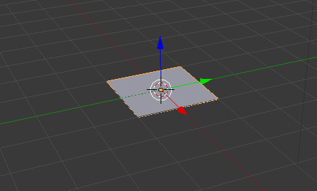2. Em Edit Mode, selecione dois vértice e faça um extrude de duas unidades em Z (E > Z > 2).
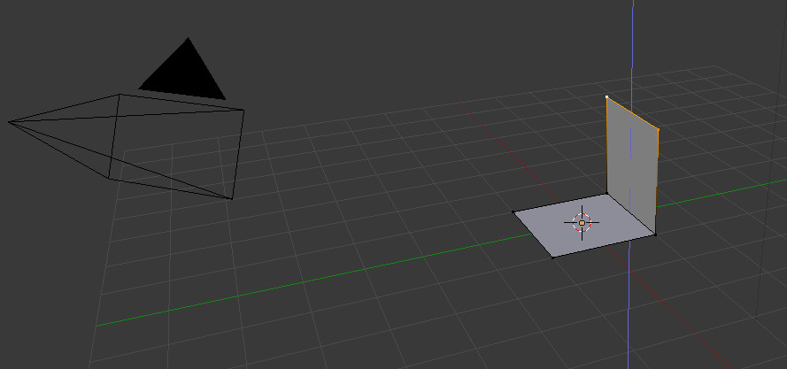3. Utilize um Subdivision Surface com valor de 2 no seu plano.
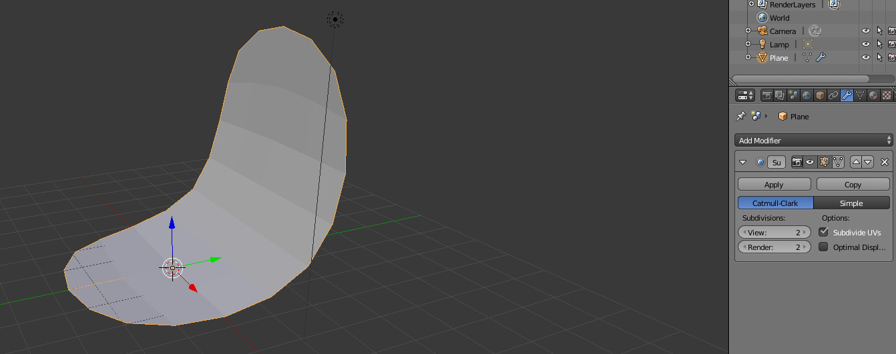4. Introduza um Loop Cut (Ctrl + R) com 2 cortes (rodar o botão do meio do rato) em cada uma das duas faces agora existentes. Estes Loops vão permitir limitar a área do arredondamento criado pelo Subdivision Surface.
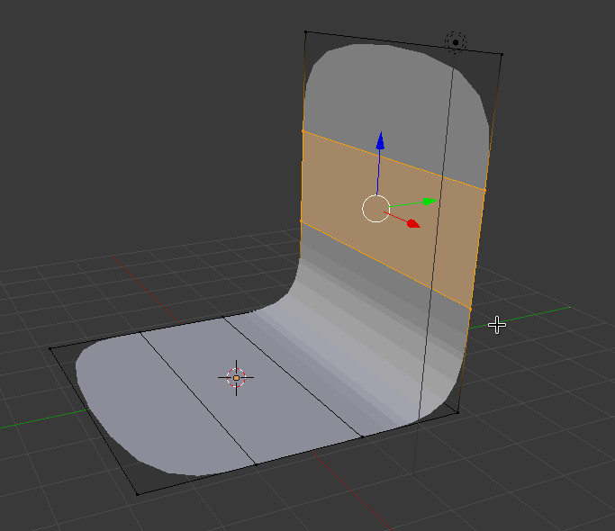5. Introduza um Loop Cut (Ctrl + R) com 2 cortes (rodar o botão do meio do rato) que atravesse as duas faces.
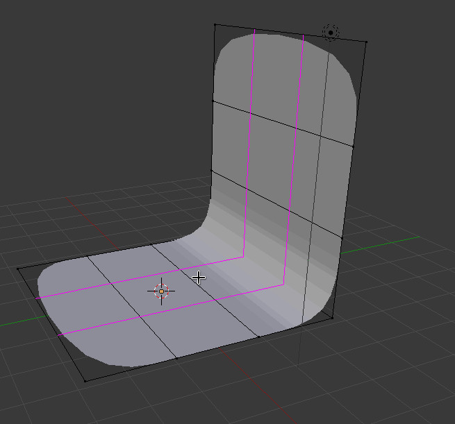6. Ainda com os novos Loop Cuts selecionados, faça um redimensionamento no eixo X (S > X) para aproximar os novos Loop Cuts dos limites das faces. Deste modo, vão limitar ainda mais a área do arredondamento criado pelo Subdivision Surface.
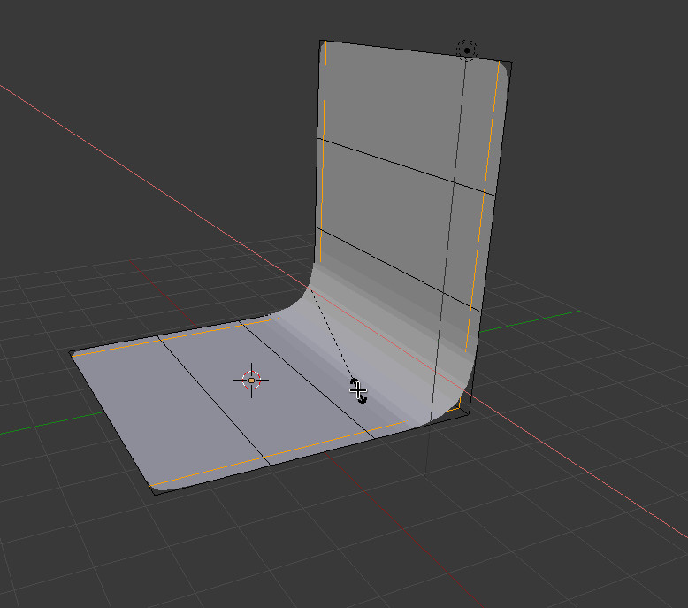7. Divida a área de trabalho para ter o 3D View e o UV/Image Editor. Em Edit Mode, selecione todas as faces (A) do seu objeto e pressione U para aceder ao menu de Unwrap. Vamos criar uma textura para melhorar o aspeto do objeto. Escolha a opção Unwrap.
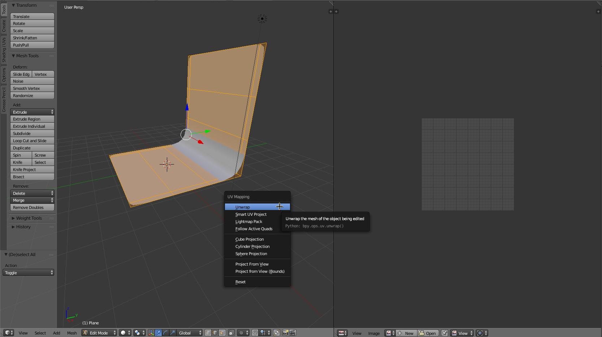8. No UV/Image Editor, pressione o botão New para criar uma nova textura. Escolha a opção UV Grid para o tipo de textura.
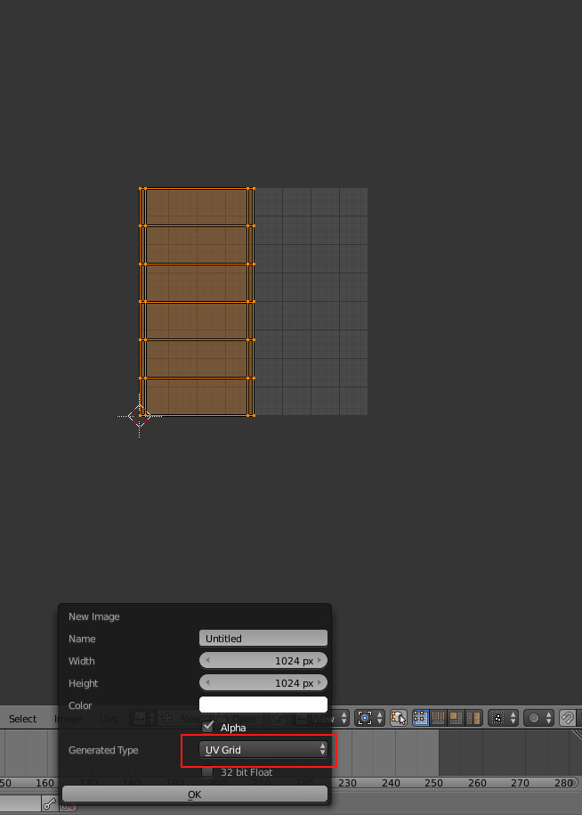9. Deverá ter uma vista similar à apresentada na imagem abaixo. À esquerda, o objeto com todas as faces selecionadas. À direita, a textura UV Grid com o UV Layout sobreposto. A textura chama-se Untitled porque não alterámos o seu nome (pode alterar o nome quando entender).
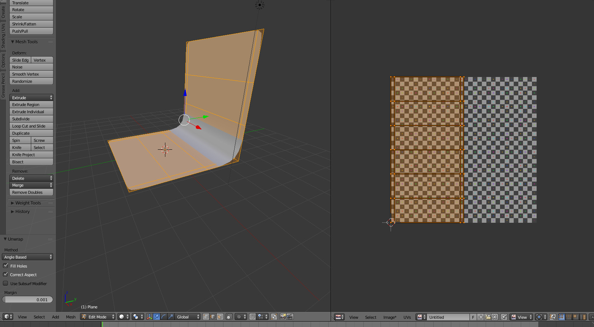10. Com o objeto selecionado, utilizando o Node Editor, crie a configuração para o material do objeto.
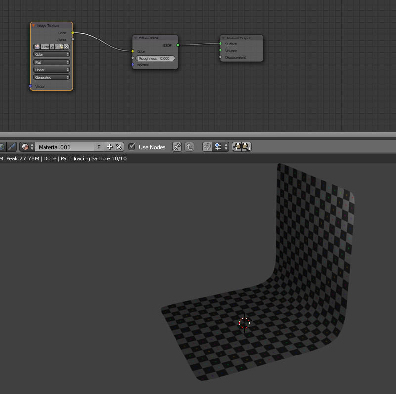11. Posicione a sua câmara de modo similar ao da imagem abaixo.
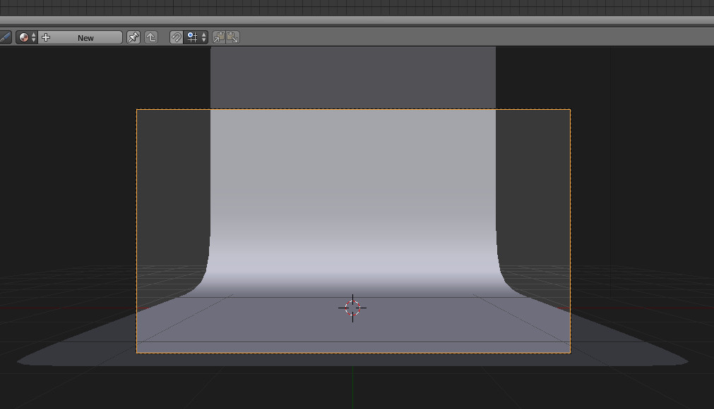12. Ative a visualização Rendered para perceber melhor o que está a construir. Como pode ver, o plano não ocupa toda a largura do enquadramento.
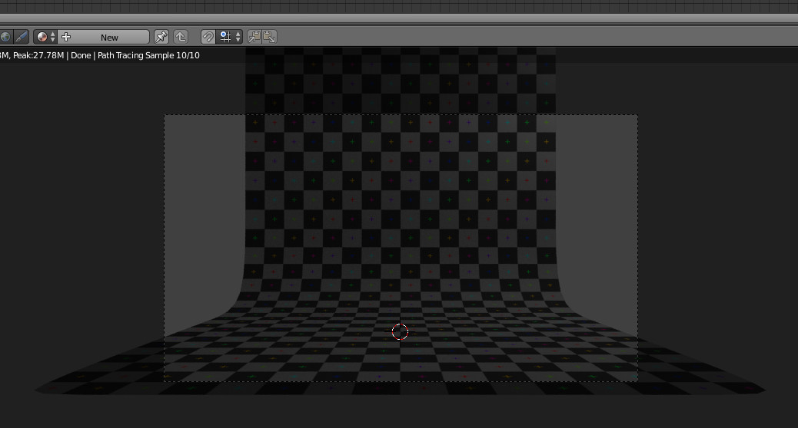13. Podíamos aproximar a câmara e/ou modificar a lente da câmara. No entanto, vamos redimensinar a largura do objeto. No nosso caso, isso significa redimensionar no eixo X ( S > X).
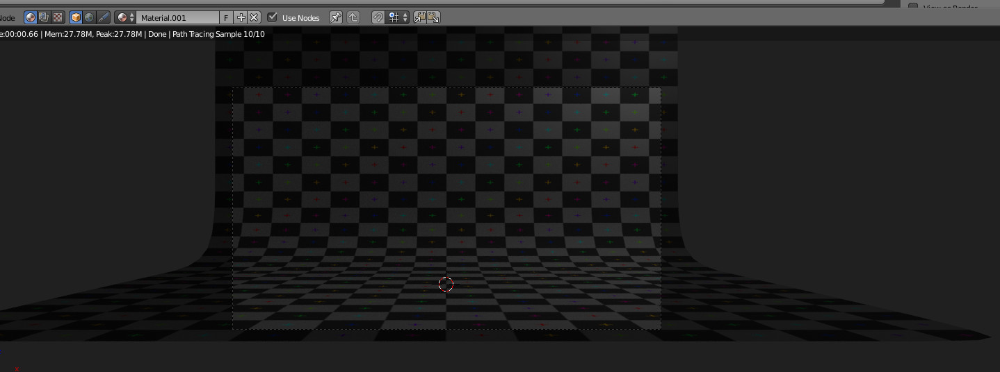14. Como estamos a distorcer a malha, a textura irá "esticar-se" acompanhado a modificação. Com o objeto selecionado e em Object Mode, vamos aplicar a alteração à dimensão (Ctrl+A > Scale).
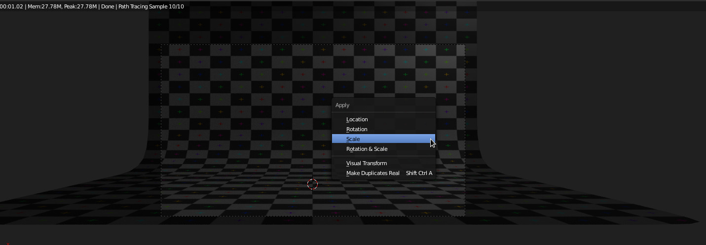15. E agora vamos fazer um novo Unwrap com as novas dimensões. Em Edit Mode, selecione todas as faces e pressione U, depois escolha Unwrap.
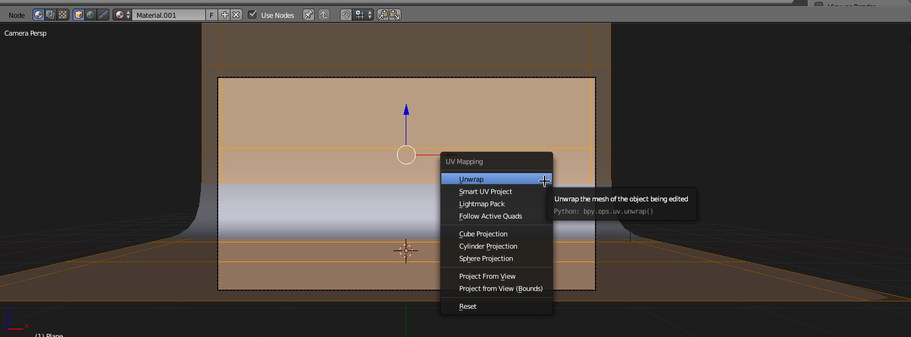16. Agora, o objeto já deve ter as novas dimensões e a textura com aspeto correto.
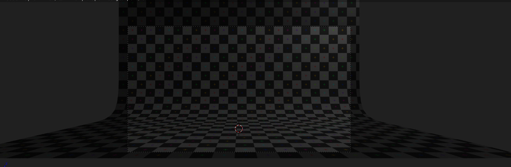17. Neste exercício vamos apenas utilizar 1 lâmpada. Estamos a utilizar um Sun posicionado do lado direito da câmara com as seguintes configurações:
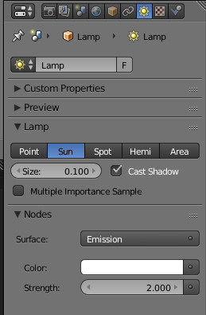18. Também ativámos o Ambiente Occlusion.
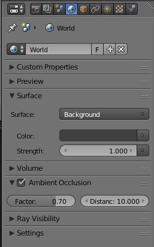19. Depois de inserida uma Suzanne, o aspeto é este.
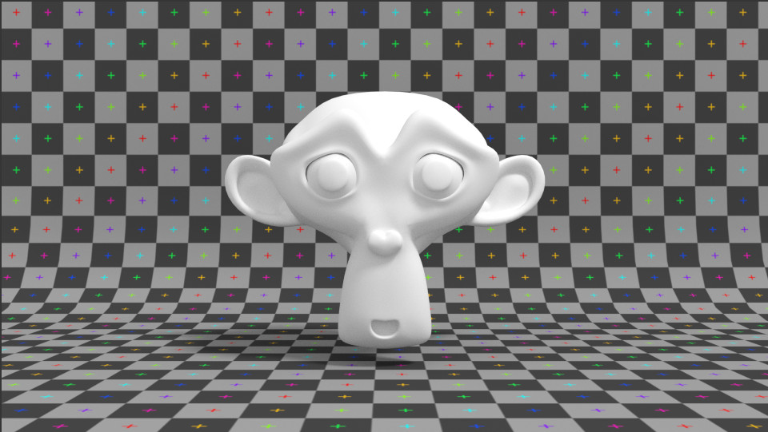20. Faça Pack All Into .blend e ative o Automatically Pack Into .blend para quando gravar o seu ficheiro armazenar a textura criada.
Limpe o seu ficheiro de tudo o que é desnecessário e grave.
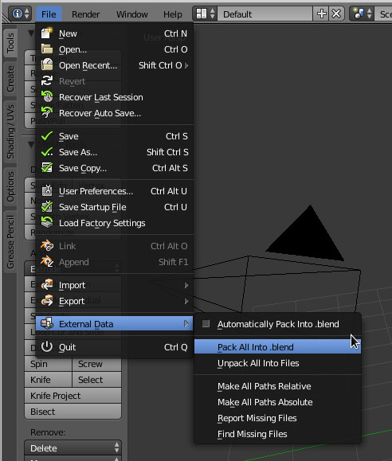Agora, quando tiver um modelo que pretenda renderizar, pode simplemente fazer Append à Scene que acabou de criar tal como fez no texto Light Rigs.
1. Melhore a iluminação.
2. Utilize outras texturas (em vez de UV Grid utilize Color Grid ou esta grelha).
{kind=link}